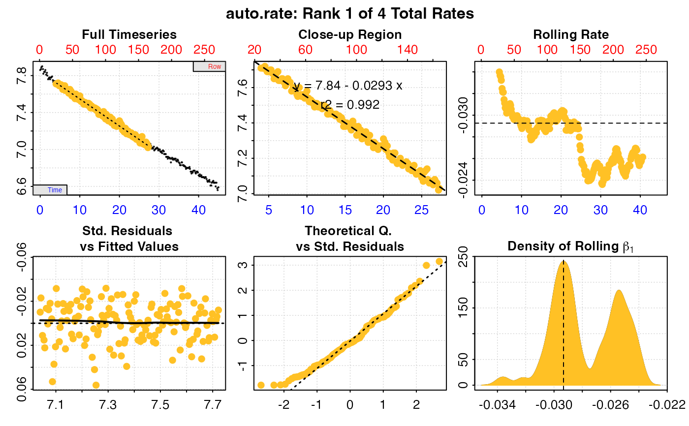

R/convert_MR.R
convert_MR.RdConverts metabolic rates to a different unit. These can be absolute rates
(i.e. whole chamber or whole specimen e.g. mg/h), mass-specific rates (i.e.
normalised by specimen mass e.g. mg/h/kg), or area-specific rates (i.e.
normalised by specimen surface area e.g. mg/h/cm2). Input rates can be a
numeric value or vector, in which case the converted rates are output as a
numeric of the same length in the new units. Alternatively, input can be an
object of class convert_rate() or convert_rate.ft(), in which case a new
convert_rate or convert_rate.ft object is returned with all rates in the
$summary and other elements converted to the new units. This allows you to
convert results of analyses to a different unit without having to repeat the
entire analysis.
convert_MR(
x,
from = NULL,
to = NULL,
S = NULL,
t = NULL,
P = NULL,
quiet = FALSE
)numeric value or vector, or object of class convert_rate or
convert_rate.ft. Contains the rate(s) to be converted.
string. The unit of the input metabolic rate(s). Should be in the
correct order: Oxygen/Time, Oxygen/Time/Mass or Oxygen/Time/Area. If x is
a convert_rate or convert_rate.ft object this is extracted
automatically and any input specified via from is ignored.
string. The unit to convert the metabolic rate(s) to. Should be in
the correct order: Oxygen/Time, Oxygen/Time/Mass or Oxygen/Time/Area. See
unit_args().
numeric. Salinity (ppt). Defaults to NULL. Used in conversion of
some oxygen units. Freshwater should be entered as S = 0. If x is a
convert_rate or convert_rate.ft object this is extracted automatically
if present and any other input ignored.
numeric. Temperature(°C). Defaults to NULL. Used in conversion of
some oxygen units. If x is a convert_rate or convert_rate.ft object
this is extracted automatically if present and any other input ignored.
numeric. Pressure (bar). Used in conversion of some oxygen units.
Defaults to a standard value of 1.013253 bar. If x is a convert_rate or
convert_rate.ft object this is extracted automatically if present and any
other input ignored.
logical. Suppresses the summary of the converted rates printed
to the console. Default is FALSE.
If the x input rates are a numeric value or vector, output is a
numeric value or vector of the same length. If x is a convert_rate or
convert_rate.ft object, output is a new convert_rate or
convert_rate.ft object with all rates in the $summary table,
$rate.output and $output.unit elements converted to the new units. This
allows you to convert results of analyses to a different unit without
having to repeat the entire analysis.
Units are specified using from and to. These should be in the sequence
Oxygen-Time (e.g. "mg/h") for absolute rates, Oxygen-Time-Mass (e.g.
"mg/h/kg") for mass-specific rates, and Oxygen-Time-Area (e.g.
"mg/h/cm2") for surface area-specific rates. If x is a convert_rate or
convert_rate.ft object the from unit is extracted automatically.
A fuzzy string matching algorithm is used to accept various unit formatting
styles. For example, "mg/h", "mg/H", "mg hr-1", "milligram per hour"
are all parsed the same. See unit_args() for details of accepted units and
their formatting.
Note some units require salinity (S) and temperature (t) to perform the
conversion. For freshwater experiments, salinity should be entered as zero
(i.e. S = 0). These conversions also require the atmospheric pressure
(P). If not entered the default value of 1.013253 bar (standard pressure at
sea level) is used. If x is a convert_rate or convert_rate.ft object,
S, t, and P are extracted automatically if they are present (they may
not be if the original rate conversion did not require them). They are also
saved to the $inputs element of the output object.
For convert_rate or convert_rate.ft inputs the primary $rate.output
element is converted to the new unit and the $output.unit also updated to
this new unit. These columns are also updated in the $summary table, and in
addition the rate.abs column and, if relevant, the rate.m.spec or
rate.a.spec column. Note, the $call element is updated to the
convert_MR call and the original call to convert_rate or
convert_rate.ft replaced. The $inputs element will still contain the
original inputs, with the output.unit updated to the new to unit. In
addition S, t, and P are added if they weren't already present.
For additional help, documentation, vignettes, and more visit the respR
website at https://januarharianto.github.io/respR/
# Convert a numeric absolute rate to a different unit
convert_MR(-0.09, from = 'mg/min', to = 'umol/hr')
#>
#> # print.convert_MR # --------------------
#>
#> Converting rates from 'numeric' input...
#>
#> Input: "mgO2/min"
#> [1] -0.09
#>
#> Converted: "umolO2/hr"
#> [1] -168.7563
#>
#> -----------------------------------------
# Convert a vector of absolute rates to a different unit
convert_MR(c(-0.090, -0.081, -0.098),
from = 'mg/min', to = 'umol/hr')
#>
#> # print.convert_MR # --------------------
#>
#> Converting rates from 'numeric' input...
#>
#> Input: "mgO2/min"
#> [1] -0.090 -0.081 -0.098
#>
#> Converted: "umolO2/hr"
#> [1] -168.7563 -151.8807 -183.7569
#>
#> -----------------------------------------
# Convert to a unit which requires S, t, & P
convert_MR(-0.09, from = 'mg/min', to = 'ml/hour',
S = 0, t = 20, P = 1.01)
#>
#> # print.convert_MR # --------------------
#>
#> Converting rates from 'numeric' input...
#>
#> Input: "mgO2/min"
#> [1] -0.09
#>
#> Converted: "mLO2/hr"
#> [1] -4.068354
#>
#> -----------------------------------------
# Convert mass-specific rates
convert_MR(-0.09, from = 'mg/min/g', to = 'ml/hour/kg',
S = 0, t = 20, P = 1.01)
#>
#> # print.convert_MR # --------------------
#>
#> Converting rates from 'numeric' input...
#>
#> Input: "mgO2/min/g"
#> [1] -0.09
#>
#> Converted: "mLO2/hr/kg"
#> [1] -4068.354
#>
#> -----------------------------------------
# Convert area-specific rates
convert_MR(-0.09, from = 'mg/min/mm2', to = 'ml/hour/cm2',
S = 0, t = 20, P = 1.01)
#>
#> # print.convert_MR # --------------------
#>
#> Converting rates from 'numeric' input...
#>
#> Input: "mgO2/min/mm2"
#> [1] -0.09
#>
#> Converted: "mLO2/hr/cm2"
#> [1] -406.8354
#>
#> -----------------------------------------
# Convert from units largely only used in older papers.
# E.g. cubic cm (e.g. Tang 1933, Head 1962)
convert_MR(0.1, from = 'cc/hr/gm', to = 'mg/hr/g',
S = 30, t = 20, P = 1.01)
#>
#> # print.convert_MR # --------------------
#>
#> Converting rates from 'numeric' input...
#>
#> Input: "cm3O2/hr/g"
#> [1] 0.1
#>
#> Converted: "mgO2/hr/g"
#> [1] 0.1327318
#>
#> -----------------------------------------
convert_MR(0.6, from = 'cm3/hr', to = 'mg/hr',
S = 28, t = 12, P = 1.01)
#>
#> # print.convert_MR # --------------------
#>
#> Converting rates from 'numeric' input...
#>
#> Input: "cm3O2/hr"
#> [1] 0.6
#>
#> Converted: "mgO2/hr"
#> [1] 0.818813
#>
#> -----------------------------------------
# uL (e.g. Zeuthen 1953, Newell & Northcroft 1967)
convert_MR(400, from = 'ul/hr', to = 'mg/hr',
S = 30, t = 15, P = 1.01)
#>
#> # print.convert_MR # --------------------
#>
#> Converting rates from 'numeric' input...
#>
#> Input: "uLO2/hr"
#> [1] 400
#>
#> Converted: "mgO2/hr"
#> [1] 0.5401719
#>
#> -----------------------------------------
convert_MR(0.5, from = 'ul/hr/mg', to = 'mg/hr/g',
S = 0, t = 20, P = 1.01)
#>
#> # print.convert_MR # --------------------
#>
#> Converting rates from 'numeric' input...
#>
#> Input: "uLO2/hr/mg"
#> [1] 0.5
#>
#> Converted: "mgO2/hr/g"
#> [1] 0.6636591
#>
#> -----------------------------------------
# mm3 (e.g. Newell & Roy 1973)
convert_MR(1.5, from = 'mm3/hr', to = 'mg/hr',
S = 30, t = 15, P = 1.01)
#>
#> # print.convert_MR # --------------------
#>
#> Converting rates from 'numeric' input...
#>
#> Input: "mm3O2/hr"
#> [1] 1.5
#>
#> Converted: "mgO2/hr"
#> [1] 0.002025645
#>
#> -----------------------------------------
# Convert rates in a 'convert_rate' object. This avoids having to repeat
# an entire analysis to see the output in different units.
# Make a convert_rate object
cnv_rt.obj <- urchins.rd %>%
auto_rate() %>%
convert_rate(oxy.unit = "mg/L",
time.unit = "min",
output.unit = "mg/hr/kg",
volume = 1,
mass = 0.05)
#> Warning: auto_rate: Multi-column dataset detected in input. Selecting first two columns by default.
#> If these are not the intended data, inspect() or subset the data frame columns appropriately before running auto_rate()
#> auto_rate: Applying default 'width' of 0.2
#> convert_rate: Object of class 'auto_rate' detected. Converting all rates in '$rate'.

# Now convert all results to "umol/min/g".
# The 'from' units are identified automatically from the object.
cnv_rt.obj.new <- convert_MR(cnv_rt.obj,
to = "umol/min/g")
#>
#> # print.convert_MR # --------------------
#>
#> Converting rates from 'convert_rate' input...
#>
#> Input: "mgO2/hr/kg"
#> [1] -35.11881 -30.40365 -38.87044 -38.33420
#>
#> Converted: "umolO2/min/g"
#> [1] -0.01829173 -0.01583583 -0.02024578 -0.01996648
#>
#> -----------------------------------------
# Compare the two:
summary(cnv_rt.obj)
#>
#> # summary.convert_rate # ----------------
#> Summary of all converted rates:
#>
#> rep rank intercept_b0 slope_b1 rsq density row endrow time endtime oxy endoxy rate adjustment rate.adjusted rate.input oxy.unit time.unit volume mass area S t P rate.abs rate.m.spec rate.a.spec output.unit rate.output
#> 1: NA 1 7.839063 -0.02926567 0.992 240.64852 25 165 4.0 27.3 7.71 7.03 -0.02926567 NA NA -0.02926567 mg/L min 1 0.05 NA NA NA NA -1.755940 -35.11881 NA mgO2/hr/kg -35.11881
#> 2: NA 2 7.743293 -0.02533637 0.990 184.52502 135 268 22.3 44.5 7.18 6.64 -0.02533637 NA NA -0.02533637 mg/L min 1 0.05 NA NA NA NA -1.520182 -30.40365 NA mgO2/hr/kg -30.40365
#> 3: NA 3 7.859601 -0.03239203 0.952 15.61468 6 54 0.8 8.8 7.82 7.55 -0.03239203 NA NA -0.03239203 mg/L min 1 0.05 NA NA NA NA -1.943522 -38.87044 NA mgO2/hr/kg -38.87044
#> 4: NA 4 7.857963 -0.03194517 0.958 14.45824 8 60 1.2 9.8 7.84 7.56 -0.03194517 NA NA -0.03194517 mg/L min 1 0.05 NA NA NA NA -1.916710 -38.33420 NA mgO2/hr/kg -38.33420
#> -----------------------------------------
summary(cnv_rt.obj.new)
#>
#> # summary.convert_rate # ----------------
#> Summary of all converted rates:
#>
#> rep rank intercept_b0 slope_b1 rsq density row endrow time endtime oxy endoxy rate adjustment rate.adjusted rate.input oxy.unit time.unit volume mass area S t P rate.abs rate.m.spec rate.a.spec output.unit rate.output
#> 1: NA 1 7.839063 -0.02926567 0.992 240.64852 25 165 4.0 27.3 7.71 7.03 -0.02926567 NA NA -0.02926567 mg/L min 1 0.05 NA NA NA NA -0.9145865 -0.01829173 NA umolO2/min/g -0.01829173
#> 2: NA 2 7.743293 -0.02533637 0.990 184.52502 135 268 22.3 44.5 7.18 6.64 -0.02533637 NA NA -0.02533637 mg/L min 1 0.05 NA NA NA NA -0.7917914 -0.01583583 NA umolO2/min/g -0.01583583
#> 3: NA 3 7.859601 -0.03239203 0.952 15.61468 6 54 0.8 8.8 7.82 7.55 -0.03239203 NA NA -0.03239203 mg/L min 1 0.05 NA NA NA NA -1.0122890 -0.02024578 NA umolO2/min/g -0.02024578
#> 4: NA 4 7.857963 -0.03194517 0.958 14.45824 8 60 1.2 9.8 7.84 7.56 -0.03194517 NA NA -0.03194517 mg/L min 1 0.05 NA NA NA NA -0.9983240 -0.01996648 NA umolO2/min/g -0.01996648
#> -----------------------------------------